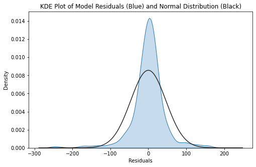

Mixed Linear Model
Contents
Mixed Linear Model#
import warnings
warnings.filterwarnings('ignore')
Import libraries#
import os
import pandas as pd
import numpy as np
import seaborn as sns
import matplotlib.pyplot as plt
%matplotlib inline
from statsmodels.regression.mixed_linear_model import MixedLM
from sklearn.model_selection import train_test_split
from sklearn.metrics import r2_score
from sklearn.model_selection import cross_validate
from sklearn.model_selection import RepeatedKFold
import statsmodels.api as sm
import scipy.stats as stats
dta = pd.read_csv('https://raw.githubusercontent.com/CharlotteJames/ed-forecast/main/data/master_scaled_new.csv',
index_col=0)
dta.columns = ['_'.join([c.split('/')[0],c.split('/')[-1]]) if '/' in c else c for c in dta.columns]
dta.ccg.unique().shape
(74,)
Add random feature#
# Adding random features
rng = np.random.RandomState(0)
rand_var = rng.rand(dta.shape[0])
dta['rand1'] = rand_var
dta.shape
(1618, 14)
Train test split#
train, test = train_test_split(dta,random_state=29)
y_train = train['ae_attendances_attendances'].values
X_train = train.drop(['ae_attendances_attendances','ccg','month'], axis=1)
y_test = test['ae_attendances_attendances'].values
X_test = test.drop(['ae_attendances_attendances','ccg','month'], axis=1)
Model#
Cross-validate#
cv = RepeatedKFold(n_splits=5, n_repeats=5, random_state=1)
scores_train, scores_test = [],[]
y = dta['ae_attendances_attendances']
X = dta.drop(['ae_attendances_attendances','month', 'year'], axis=1)
for train_index, test_index in cv.split(X, y):
model = MixedLM(endog=y.iloc[train_index].values,
exog = X.iloc[train_index].drop(['ccg'],axis=1).values,
groups=X.iloc[train_index].ccg.values)
ml_fit = model.fit()
y_pred_test = model.predict(ml_fit.fe_params,
exog=X.iloc[test_index].drop(['ccg'],axis=1).values)
y_pred_train = model.predict(ml_fit.fe_params,
exog=X.iloc[train_index].drop(['ccg'],axis=1).values)
scores_test.append(r2_score(y.iloc[test_index],y_pred_test))
scores_train.append(r2_score(y.iloc[train_index],y_pred_train))
res=pd.DataFrame()
res['test_score'] = scores_test
res['train_score'] = scores_train
res.describe()
| test_score | train_score | |
|---|---|---|
| count | 25.000000 | 25.000000 |
| mean | 0.092296 | 0.096086 |
| std | 0.052074 | 0.057714 |
| min | -0.060924 | -0.071581 |
| 25% | 0.071561 | 0.082681 |
| 50% | 0.099458 | 0.108742 |
| 75% | 0.119344 | 0.126630 |
| max | 0.160848 | 0.188843 |
Coefficients#
model = MixedLM(endog=y, exog = X.drop(['ccg'],axis=1).values,
groups=X.ccg.values)
ml_fit = model.fit()
ml_fit.summary()
| Model: | MixedLM | Dependent Variable: | ae_attendances_attendances |
| No. Observations: | 1618 | Method: | REML |
| No. Groups: | 74 | Scale: | 2285.2604 |
| Min. group size: | 12 | Log-Likelihood: | -8795.4714 |
| Max. group size: | 24 | Converged: | Yes |
| Mean group size: | 21.9 |
| Coef. | Std.Err. | z | P>|z| | [0.025 | 0.975] | |
|---|---|---|---|---|---|---|
| x1 | 0.348 | 0.069 | 5.059 | 0.000 | 0.213 | 0.483 |
| x2 | -0.324 | 0.077 | -4.190 | 0.000 | -0.476 | -0.172 |
| x3 | -0.062 | 0.074 | -0.838 | 0.402 | -0.206 | 0.083 |
| x4 | 0.086 | 0.100 | 0.863 | 0.388 | -0.110 | 0.283 |
| x5 | 0.014 | 0.002 | 5.805 | 0.000 | 0.009 | 0.019 |
| x6 | -1.392 | 0.641 | -2.170 | 0.030 | -2.649 | -0.135 |
| x7 | -5.477 | 1.295 | -4.231 | 0.000 | -8.014 | -2.940 |
| x8 | 4.230 | 2.723 | 1.554 | 0.120 | -1.107 | 9.566 |
| x9 | 5.912 | 2.998 | 1.972 | 0.049 | 0.037 | 11.787 |
| x10 | 6.558 | 4.167 | 1.574 | 0.116 | -1.609 | 14.724 |
| Group Var | 67340.324 | 262.242 |
Residuals#
fig = plt.figure(figsize = (8, 5))
ax = sns.distplot(ml_fit.resid, hist = False, kde_kws = {"shade" : True, "lw": 1}, fit = stats.norm)
ax.set_title("KDE Plot of Model Residuals (Blue) and Normal Distribution (Black)")
ax.set_xlabel("Residuals")
plt.show()

Q-Q Plot#
fig = plt.figure(figsize = (8, 5))
ax = fig.add_subplot(111)
sm.qqplot(ml_fit.resid, dist = stats.norm, line = 's', ax = ax)
ax.set_title("Q-Q Plot")
plt.show()
Residuals by CCG#
fig = plt.figure(figsize = (15, 5))
ax = sns.boxplot(x = ml_fit.model.groups, y = ml_fit.resid)
ax.set_title("Distribution of Residuals for ED attendances by CCG ")
ax.set_ylabel("Residuals", fontsize=12)
ax.set_xlabel("CCG", fontsize=12)
plt.xticks(rotation=70)
plt.show()